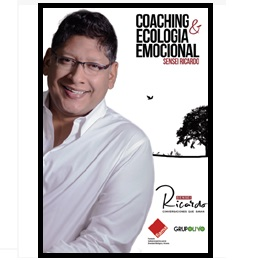

Autor: Ricardo Aquino
Coaching y Ecología de las Emociones
Formato: Físico y digital
Sinopsis:
Sabemos qué es el coaching cuando lo hacemos, pero es un problema hacerse de un concepto. Este libro sugiere que la construcción del Coaching se realice a partir del cambio personal del coach, desde las cosas simples y cotidianas para así poder inspirar a otros. Más que una guía, genera una conversación con el lector, desde el enfoque sistémico, sobre el abordaje de la dimensión emocional y aprendizaje experiencial del coachee sobre sí mismo, y la evolución del coaching.